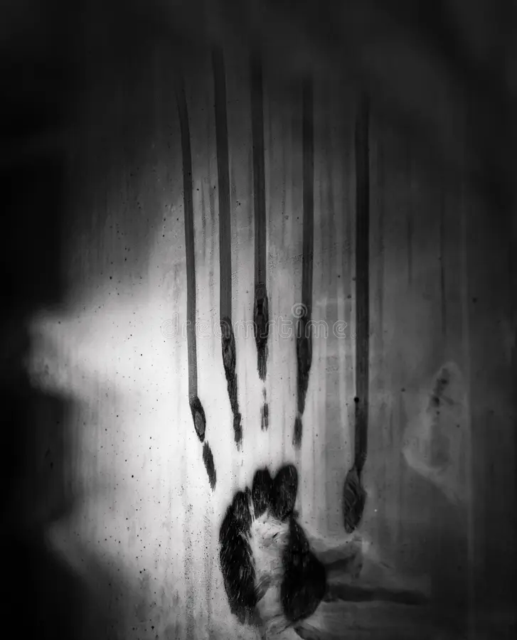

You immediately turn it off, then almost like deja vu you see the
same woman standing by the road. You keep going thinking you really
must be tired
but then you see her again, and again and
somehow it’s almost as if she’s getting closer every time you pass
her it’s less and less feet before you see
her again. You try
not to look and keep your eyes focused ahead until the trucks
lights start to flicker and the engine stalls. You try to start it
again but
with no luck, it won’t turn over. You’re now stranded
on this endless stretch of road unsure of who or what awaits you
outside the safety of your truck.

The temperature starts to drop and you can feel yourself shaking
from the cold, your fingers feel numb and the windows are starting
to fog up.
A few minutes later, the screaming starts. Echoing
into the empty night air deep guttural inhuman noises surrounding
you getting louder and
more erratic as what sounds like dozens
of creatures screaming in unison are climbing on your truck, tearing
into the metal. You see what look
like handprints on the windows
but longer and almost twisted, then you hear them start banging on
the roof the truck as it starts shaking back
and forth creaking
under the weight on top.
Your heart is pounding and you feel your hair stand on end, you
cover your ears and close your eyes waiting for it to be over. It
feels like its been
hours but it finally stops, you slowly
uncover your ears and as you open your eyes that’s when you see
something next to you………..in the passenger seat.